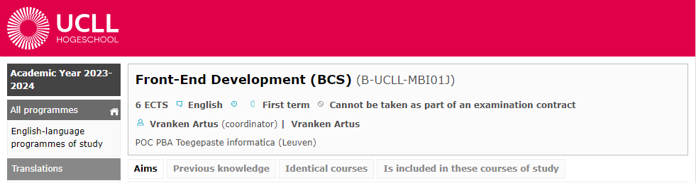
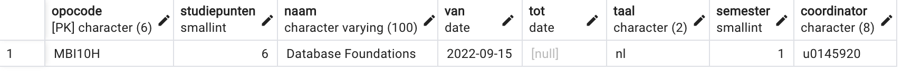
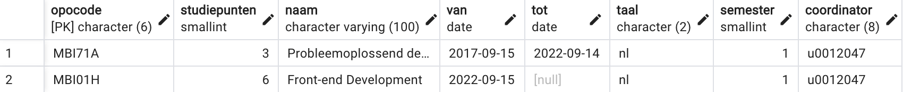

The best teachers do not simply spout information at their students and hope for the best. The best teachers are those who set expectations responsibly and ensure that students adopt a resilient, "can-do" frame of mind.
— Walter Shields, SQL QuickStart Guide: The Simplified Beginner's Guide to Managing, Analyzing, and Manipulating Data With SQL
Intro SQL
In this chapter, you dive into a database for the first time. You will learn the basic structure of a relational database and how to structure and manipulate content. Everything we see in this chapter will be further explored and explained in future chapters. It is explicitly intended that you execute the instructions given in this chapter on the database server.
If you have any questions, we're here to help.
Our first table: list of courses
Our Applied Computer Science program consists of a long list of courses. Some are compulsory, others are elective courses. Your ISP (Individual StudyProgramme) will make a selection from this list. However, the programme changes regularly. The list of all courses should also include those courses that used to be in the training programme but are no longer organized. Thus we have an overview of both the current courses and an archive of all previous ones in one single table.
In this example, we simplify reality quite a bit so that we cover all the steps without making it too complex.
What do you want to track?
Before you start coding, you need to reflect on a few things. What exactly do I want to track? What should the data be used for?
Take a look at the educational offerings of Applied Computer Science. Here you will find all the courses of our bachelor programme of the current academic year.
Look at one of your courses, e.g. 'Front-End Development':
What information will you find here? Obviously, in this introductory example we very much limit ourselves to the basics.
We mainly want to provide the info that is useful for putting together your ISP. We choose the following data:
-
Each course is uniquely identified by a course code. For 'Front-End Development', that code is 'MBI01J'. If you look at other courses you will notice that this code always consists of 6 characters.
-
Needless to say, it is rather impractical to use the code each time we're discussing a specific course. Therefore, we also provide each course with a name such as 'Front-End Development'.
-
Important for establishing ISPs is the number of ECTS credits per course. Most courses have 6 credits.
-
From this year, we started providing courses in English. The same course is now taught in both Dutch and English. Those two versions will each have a different course code, but it is still useful to include the language in our list.
-
In which semester is the course given? Some courses (such as internship) may be included in different semesters. For your ISP it is also useful if you can get an overview by semester. Let's use this value as a combination of phase (1, 2 or 3) and semester (1 or 2). For example, the value 4 means this is an course from phase 2, semester 2.
-
Courses come and go. Two years ago, the applied computer science programme (in Dutch) looked completely different. For example, there was an course 'Probleem-oplossend denken' ('Problem-solving') which was given for about five years and has now disappeared from the programme. We will have to come up with a way to include this information in our list so that we can reconstruct an overview which courses were given in a specific year.
-
Each course has a coordinator and lecturers who teach it. Courses are usually taught by several lecturers (in the first year often 4 per course). We will add that later to our model as it is currently a bit too difficult as it requires a separate table (more on that later). At this point we can already add the coordinator, because each course has precisely 1 coordinator which is also a lecturer. Like students, lecturers have a unique code of 1 letter ('u') followed by 7 digits. Later we will expand on the lecturer and keep more information (name, email address etc.). At this point the lecturer code is sufficient.
The data from the list above will become the columns (vertically) of the table. Per course, there will then be one row (horizontal) in the table.
Some simple data types
A database such as PostgreSQL uses several data types. Before we can get started with SQL, we first need to tell you something about datatypes. Each data type has its specific purpose and properties. It is important to reflect carefully about the most fitting data type. In this introduction, we will limit ourselves to a small selection of data types.
char()
Sometimes you know in advance that the value of a particular attribute
(column) is a text value. One then speaks of 'alphanumeric
values': letters and numbers, interpreted as characters. If that text
value always has the same number of characters, then the data
type char is the most suitable in this case. A course code always
consists of six characters (for TI: 'MBI' followed by two digits and finally
a letter). So it is best to use
char(6) as the data type.
Analogously, each lector is uniquely identified with a code consisting
consisting of a 'u' followed by seven digits, e.g. 'u0012047' (a.k.a. Jan
Van Hee). So for this, char(8) is the obvious data type.
For storing the language of an course, this data type is also suitable.
Indeed, any language can be represented via ISO 639-1 codes (https://en.wikipedia.org/wiki/List_of_ISO_639-1_codes). Dutch ('nl'), English ('en'), French ('fr'), ... and so a char(2) is a good choice.
varchar()
Of some columns you know that they contain text values, but you
don't know in advance how long the text value will be. You could still
use char, but that has the disadvantage of always reserving
the full memory space. Let's suppose you use the data type char(100) for the name of a course, in order to allow new courses with a very long
name or description to be added. A course like 'Database foundations' only
uses 20 of the reserved 100 bytes, meaning 80 bytes would be filled up with
blank spaces. That's an inefficient usage of available memory.
For this kind of data, it's best to use varchar(100). The
total memory space a text value occupies equals to the number of
characters plus 1 or 2 bytes for length information. In this case,
'Database foundations' would thus take up 21 bytes (length = 20 + 1 extra
byte) memory space. This gives a more efficient usage of available memory
compared to the 100 bytes.
But every advantage has its disadvantage: varchar is more memory
efficient, but is slower to process (save, retrieve, ...) than
char. Moreover, char is more suitable for data that
changes frequently. For the small tables we will create in this course of course,
speed has no importance. But it is indeed an important trade-off that has to
be made in large databases.
integer
For integers, the data type integer (4 bytes, from - 2147483648
to 2147483647). That is, of course, a bit overkill for the 'credits' column.
PostgreSQL also has smallint which takes only 2 bytes. That's
actually the better choice here, so let's go for that.
date
Working with dates is an important part of a database. In this introductory example, we need to be able to indicate when an course started and up to which date it was a part of the programme. There are many different ways to format a date, but we'll keep it simple here. If the course 'web development 1' started on 16 September 2015, then we can enter that enter the date in ISO 8601 format as '2015-09-16'.
Create schema
A database server such as PostgreSQL can hold a lot of databases. Each database may consist of several schemas. For this assignment we first create a new schema.
Execute the following steps in pgAdmin.
Open the pooling_62324 connection.
-
Open the database corresponding to your group (e.g. 1CS1 if you are in group 1).
-
Right-click on 'Schemas' and choose 'Query Tool'. In this window, you can you can now execute SQL code (so-called 'statements' or 'queries').
-
Create a new schema for this exercise in the database that belongs to your group. The name of the schema is your r-number (where the code shows how I would do it for my account, use your own student number instead of my u-number, of course). Type this code and execute using the triangle symbol ▸ (hotkey: F5, remember this because you will use this command often).
CREATE SCHEMA u0012047 -- use your own rnumber! (comments start with -- in SQL)SQL statements are usually written in capital letters ('CREATE'), but this is not mandatory. It is best to use no spaces in schema names. It can be done, but then you have to put this name between double quotes ("..."). We prefer not to do this, as it adds more complexity and possibility to make mistakes. We prefer no capitals or hyphen in schema names, because also then double quotes are mandatory. If there are no errors, the database server answers something along these lines:
CREATE SCHEMA Query returned successfully in 293 msec. -
You should now refresh the schema list. Right-click on Schemas and choose 'Refresh...'. Your new schema is now shown in the list. Great!
Create a table in this schema
A database schema usually consists of many tables that are interconnected connected by so-called keys. In this introductory example we restrict ourselves to just one table named 'course'. The table has eight columns.
From here, it's a good idea to save things you type in a separate .txt file.At the end of this class, we'll ask you to delete the rows you created and drop the table. As a result, you lose everything you created, so it makes sense to save your work in a text file, e.g. one for each class.
Code for CREATE
Type the code in the code block below. There are some comments on the code below. We recommend retyping the code, but you can also copy/paste the code from this text. We would advise you to type. There is something like "muscle memory" which you should not underestimate in IT. By typing something quietly your brain learns new skills in a way which doesn't happen when you copy/paste.
CREATE TABLE course (
coursecode char(6) NOT NULL ,
credits smallint NOT NULL ,
name varchar(100) NOT NULL ,
startdate date NOT NULL ,
enddate date ,
languagecode char(2) NOT NULL ,
semester smallint NOT NULL ,
coordinator char(8) NOT NULL ,
CONSTRAINT pk_training_coursecode PRIMARY KEY ( coursecode )
); Some comments on this SQL code:
-
For the name of a table, do you use single ('training unit') or multiple ('training units')? Opinions are divided. We usually go for the singular form. In itself, it doesn't really matter which form you choose, as long as you are consistent.
-
White space, indentation and spaces are not important for the computer but are for the people who have to read the code.
-
We talked about the datatypes above:
char,varchar,smallint,date. -
In between each attribute (column) comes a comma.
-
The addition
NOT NULLmeans that if you add a new row (new course) to the table, it is mandatory to provide a value for this column. In other words this column should be filled for each row. There is only one field that may be left blank and that is the 'enddate' field. This also makes sense: an course such as 'Database foundations' (new from academic year 2022-23) will hopefully run for a number of years anyway continue to run. We don't yet know on which date it will no longer be organized. Every ongoing course thus an empty value in the 'enddate' column. -
The last line adds an important condition ('CONSTRAINT'), named 'pk_training_coursecode': the 'coursecode' column is the primary key. That is, this value identifies each row uniquely. If, in the schema, you try to add a new row with the same course code, the database server gives an error message which in turn preserves the data integrity. We talk about keys in detail in the chapter on the logical data model.
-
Several SQL statements are separated by a semicolon (;). Even though
this code contains only one (long) statement, most developers will place
a
;after it by default.
Copy all code until the ;, paste and execute (F5).
If all is well, the database server responds with:
CREATE TABLE query returned successfully in 1 secs 151 msec.The first student in the group to execute this code will indeed get this message. All subsequent students, however, will get an error in this style:
ERROR: relation "course" already exists
SQL state: 42P07In the next section, we will examine this common error and provide provide you with two solutions.
Choosing the right schema
We've deliberately made you make a mistake that everyone has to (and will) make at least once. Every table you create automatically ends up in the schema 'public'. Check it out ... You will see that the table 'course' is there. That's why everyone - except the first student - gets the error message that a table with that name already exists. Everyone is working in the schema 'public' and trying to create a table with an already existing name.
There are two solutions to this problem:
-
Always precede the name of a table by the name of the schema. Specifically, for me (use the name of your own schema, so with your r-number) that I have to modify the CREATE statement to:
CREATE TABLE u0012047.course ( coursecode char(6) NOT NULL , ... );This solution is suggested by many people as a best practice and many software tools (we will use DBSchema later) do it systematically this way.
-
An alternative is that you first define
search_path. My code then becomes (don't forget the ; between two SQL statements):SET search_path to u0012047; CREATE TABLE course ( coursecode char(6) NOT NULL , ... );
Now repeat the above CREATE statement from the previous section
to create the table in your own schema.
Add data with INSERT INTO
Our table is ready. The columns are defined. The only thing missing is data (rows). Let's add a course, e.g. the one that you are currently working on: Database Foundations. Look up all the information in the ECTS sheet for this course (you can find it via Toledo or via the educational offer). There are two ways to add the desired info as a row in our schema: with or without mentioning the column name.
Mentioning all columns to give values
Type in and execute the following code (and for the last time: replace
my schema name with the name of your own schema). You can, of course,
also set your search_path properly and then you won't have to
substitute the name of the schematic each time of the schema before the table
name.
INSERT INTO u0012047.course (coursecode, credits, name, startdate, languagecode, semester,
coordinator) VALUES ('MBI10H', 6, 'Database Foundations', '2022-09-15', 1, 'u0145920');
-- comment: The coordinator is Steven Engels, this is his staff number
-- which you can find e.g. via a search at teams chatText and dates are put between single quotes. The credits and semester are an integer, so without quotes.
If the server replies with 'successfully', you can check the content of
the entire table is now with the SELECT command (which we will
elaborate on in a later section).):
SELECT * -- the star * means: return the full row
FROM u0012047.courseThe server replies with the following statement:

Note that the 'enddate' ('tot') field has the value NULL.
This means that there is no value for this field.
Null columns
There is a shorter way to add a row, where the value
NULL does matter. As an example, let's add the course 'Programming
1'. We do that with the following code:
INSERT INTO u0012047.course VALUES ('MBI02H', 6, 'Programming 1', '2022-09-15',
NULL, 'nl', 1, 'u0058120');
-- The coordinator is Marina Lens u0058120
See what the big difference is? You no longer have to list the column
names, but now you have to explicitly enter the value NULL for
the column 'enddate'. Check via SELECT * FROM ...
that this course has also been added to your schema.
Assignment
Now add a number (at least 10) of your own courses to your schema. Make sure that you also have at least one course from semesters 2, 3, 4, 5 and 6. Add also preferably a course in a other language (e.g. Français pour le boulot, Visual user environments, ... think of something yourself if necessary). Also add some courses with less than or more than 6 credits. Also add some courses that are no longer taught, you find a list of courses that were taught in 2021-2022 here. The end date for these classes is 2022-09-15.
Important tip: later we will destroy the full table. So keep all the queries you write to add new rows into a .txt file.
As long as you don't close pgAdmin, you'll find all previous queries under the 'Query History' tab.
Viewing data with SELECT
You already used SELECT * FROM table name above to get the full contents of your table. I added a total of 11 courses to my table. These
11 rows allow, for the remainder of this text, different possible queries to
display.
You can view this table in the database 'df', schema 'sql_intro'. Each
student was given USAGE rights to the schema and SELECT permissions on the table. So you cannot add, update or delete. Therefore,
you work in your own schema and table, where you are not restricted. The
permissions topic is covered in a later chapter.
Sometimes, of course, you don't want to see all the columns of the
table. Suppose you just want a list of all the names of courses, followed by
their number of credits. In the SELECT you then explicitly specify
those columns in the correct order specify.
SELECT name, credits
FROM u0012047.course
On reflection, I don't think the column header in the above overview is
appropriate. Instead of 'name' in the column header, I would rather put
'course name'. This can be done with the following query, using AS:
SELECT name AS "course name", credits
FROM u0012047.courseSelect specific rows with WHERE
The result of SELECT ... FROM ... contains all rows in
the table. Usually you are not interested in all rows, but only
in rows that fulfil one or more conditions. A example: I want an
overview of all courses I am coordinator of or I have been coordinator of
in the past. My staff number is 'u0012047'. The overview may show all
columns. The query will be:
SELECT *
FROM u0012047.course
WHERE coordinator = 'u0012047'Two rows are displayed:
WHERE coordinator = 'U0012047' would not have returned a single row because all staff numbers were entered
with lower case.
Logical operators
You can combine conditions with so-called 'logical operators':
AND, OR and NOT. More details will
follow later, but for now one small example. A compound condition with AND is true only if both conditions are true. Try the following exercise.
List all courses that have less than 6 ECTS credits and are given in Dutch. The list contains only the columns name, course code and the number of credits.
SELECT name, coursecode, credits FROM u0012047.course
WHERE credits < 6 AND languagecode = 'nl'Testing for empty fields
If you want to test for the value NULL you cannot use the
equal sign
but should use IS NULL or IS NOT NULL. Let's do
a little exercise.
List all courses that are no longer organized.
SELECT *
FROM u0012047.course
WHERE until IS NOT NULLDeleting rows with DELETE
A database server should also be able to delete rows. Perhaps the data is
outdated, no longer applicable or just wrong. Of course, this is an operation you should be careful with. You almost always use the DELETE command in combination with
WHERE to delete only certain rows from the table.
As an example, we remove all courses from the table that have less than 4 credits:
DELETE
FROM u0012047.course WHERE credits < 4
The database server replies with the message that three rows have been
deleted from the table. Check yourself with a SELECT *
to see which rows have been removed.
DELETE 3
Query returned successfully in 76 msec.
There is also a TRUNCATE statement that lets you delete the entire contents of a table. The table itself remains, but all rows are deleted.
Adjust data with UPDATE
Lecturers get different tasks, courses change names, credits or semester,
... So you also need to be able to modify rows. Due to a change in my
assignment, I am no longer coordinator of the course 'Front-End
Development'. The new coordinator is Johan, with staff number 'u0039456'.
We update the data in the table with the somewhat more difficult query UPDATE ... SET ... WHERE ...:
UPDATE u0012047.course
SET coordinator = 'u0039456'
WHERE coursecode = 'MBI01H'
If the condition in the WHERE applies to multiple rows, then the
coordinator of all these rows is modified. In other words, it's a
query you need to be careful with. Since we are doing a test here
on the primary key 'coursecode', there is only one row where this test passes
and can therefore be updated.
If your operation was successful, you can view the result with an regular SELECT.
For all ongoing courses given in the third semester, change the semester to 4.
UPDATE u0012047.course
SET semester = 4 WHERE semester = 3 AND enddate IS NULLSort rows with ORDER BY
The database server returns the result of a query in a certain order which you cannot predict. It depends on the type of server (postgreSQL does it differently from InnoDB e.g.), the query, internal optimisation, etc. You often want to sort lists according to one or more columns: alphabetically, from small to large, ... The following query sorts all courses according to increasing number of credits, i.e. the course with the smallest number of credits is at the top.
SELECT *
FROM u0012047.course
ORDER BY credits ASCThe default sorting is from small to large ('ASCending', is also called 'ascending sorting'). You may in this case omit the word 'ASC'. So this is an equivalent query:
SELECT *
FROM u0012047.course
ORDER BY credits
It can be even shorter. Instead of the name of the column you sort on, you
can just specify the order number of the column. That is a bit less readable but shorter. The credits are in the second column of all the columns shown in this SELECT so:
SELECT *
FROM u0012047.course
ORDER BY 2You can also sort from large to small ('descending sort' or 'DESCending'). This query shows a list of courses (just name, SP and coordinator) in reverse alphabetical order:
SELECT name, credits, coordinator
FROM u0012047.course
ORDER BY name DESC -- alternative is: ORDER BY 1 DESC
You can also sort on multiple columns by putting a comma between the
column names (or numbers) after ORDER BY. Write the query
that shows the full list (all columns) sorted by number of credits from
small to large and then (within a same number of ) by decreasing
semester.
SELECT *
FROM u0012047.course
ORDER BY credits ASC, semester DESC
-- alternatively: ORDER BY 2, 7 DESCDeleting entire table with DROP
In this introductory piece you got a brief overview of a lot of different steps: create schema, define table, populate with data, querying, updating, deleting rows, sorting, etc. Time to conclude with cleaning up what we created. Deleting a table can be done only if you are the owner of the table . Even if you give permissions to other people to manipulate your table, those people still can't delete it.
Needless to say, this is an operation you need to think carefully about. Gone is gone!

You delete a table with the DROP command.
DROP TABLE u0012047.courseThe server responds with:
DROP TABLE
Query returned successfully in 128 msec.Check yourself (don't forget 'Refresh') that the table is no longer in your schema. Then you can also delete the schema itself with:
DROP SCHEMA u0012047